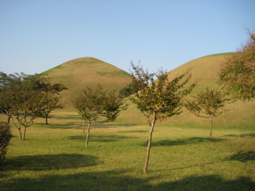

might as well get this out of the way for those who haven’t seen:
http://www.youtube.com/watch?v=g9O3yYL0rYo
ok im in frickin korea, just now back in my teacher’s lounge after an awesome (read: terrible) lunch of rice and some type of octopus legs. so why not fill you all in?
why does my korean co-worker keep bringing me this yellow water and pouring it in my glass day after day!?! it’s clearly not water and it’s definitely not lemonade, so what the hell is it? sometimes i drink it and try to convince myself its just water that someone, somehow, spilled harmless yellow dye into. well it tastes like the water in my fishtank (dont ask how i know) and im putting a stop to these yellow water shennanigans.
usually, i smile, take a few sips, make a terrible face, wait until she turns her back, beeline for the bathroom and dump the—we’ll call it pee-water for lack of a better term, into the sink. the problem i have created for myself is that she must think i love the shit because my glass is now always empty,leaving her to think im gulping it down and now doubles as my personal water-boy. i wish i was meaner, i really do, but i just don’t have the heart to break hers. my other co-teacher said it best last week when she was given some of the pee-water, “this taste berry muchy like pipe”
so when your water is described by other koreans as “pipey”— houston you might have a problem. on a side note, i think all koreans should have to take “shopping cart driving tests” before they are allowed to walk around a store with 300 people controlling a large metal cart.
sports fans will like this—karim garcia is a former detroit tiger back when the team was terrible. well karim garcia is now playing for the Lotte Giants, the local baseball team here in Busan. They are bottom-feeders year after year, the kansas city royals of Korean baseball.
my friends and I were at an Oktoberfest in a local hotel and they informed me that some guy named “garcia” entered into an arm-wrestling tournament and he plays baseball. after further questioning, i found out it was indeed Karim “the latino bambino” garcia himself. (thanks nate fridson)
turns out he lost in the first round to an “overweight Korean.” so there you have it folks, how do you know you have hit rock-bottom? you are a former major league baseball player, playing for the worst team in Korean baseball history, and just lost an arm-wrestling match to a fat Korean dude in a hotel in Busan, South Korea. Karim, it can only go up from here buddy.
ok since you last heard from me, I was trying to go Seoul to tour the DMZ among other things. well, all who know backpacker acker, know that planning isn’t one of my strong suits, ok forget strong suits, i simply don’t know how to plan. The only thing that happens when you plan is plans get broken, if you never make plans, you never break em? pure genius.
we decided that instead of going to seoul where the dmz tour was booked, hotels were filled, and a good chance the weekend might end up with us sleeping in a seoul subway station, we decided to head to gyeonju, a city an hour north of us, rich in history. The Shilla Dynasty ruled here for thousands of years before being destroyed by Romans, Japanese and whoever else wandered down the peninsula. Gyeongju (im going to spell it different everytime so deal) has temples, tombs, pagodas, and lots of greenery. (not that kind stephen)

the other reason gyeongju sounded so appealing was the fact that lonely planet stated you could rent a bicycle and cycle anywhere in Gyeongju. Now, what Lonely planet should have said is “you can cycle anywhere in Gyeongju, if you a) are Lance Armstrong, b) take massively unhealthy amounts of steroids or c) have a motor on your bicycle.
so we arrived in the town, and set out looking for some sort of lodging. This place has millions of motels and one backpacker hostel. It was the kind of place a guy can go with out making any plans, my kind of town. Just pop into town, start strolling around, and find a place to lay ya head for the night. Jen and I found a motel that looked decent but was sold out, turns out some people did make “plans” or whatever.
we found the only backpacker hostel in the town and went in and paid for the only room left: a glorious mountain view with a private balcony overlooking a flowing river and rice paddie. Im joking, it was a moldy mattress on the floor of a room whose wallpaper was making an escape towards the floor. just had to do the age-old, drink until you don’t realize where you are sleeping routine, wake up in the morning, (hopefully still drunk) and get the hell outta there…all before you realize where you just slept.
we rented two bicycles and biked 4 miles to a nearby lake. It had some type of crazy concert going on that we wanted nothing to do with. It also had 3000 little children riding motorcycles. Im not exagerrating or kidding, they were little dudes riding miniature motorcycles. how the hell they stayed up and didnt crash all the time with no training wheels is beyond me. these kids have a gift, although the whole time I was walking around, I kept thinking to myself I wonder how much blowing your ACL out really hurts…
i wouldn’t mind one scar from korea, but something about sitting at the bar in Chicago when I get back and someone saying “dude nice scar, what happened?” followed by me saying, “this four year old on a harley flat just took me out, he was big for a four year old though i swear!” Im not sure that is a cool story.
this is why you should update your website right after a trip, im now cycling through my photos, drinking wine, trying to remember how the hell we spent the next three days…
well we did go to a local park in Geoyongui (notice the spelling) to see the tombs of various Silla dynasty kings. The line for one of the kings was damn near 1000 people, so we had to settle for just walking around the park, admiring the tombs. here’s a photo…
We retired for the night after eating at a great restaurant in town, that served some Western style food which we always welcome (I will have a whole separate post for the food here, hint: it will be long and negative so come prepared with your drink of choice)
in the morning, we woke up early and headed back on our bikes. the original plan was to cycle to the temple, then cycle back and head towards the other smaller temples, statues, tombs, etc. we were probably riding for an hour or so and didn’t feel like we were remotely close to the temple and the grotto. we were in search of Bulguksa Temple and Seokram Grotto (god i am butchering these words and i feel terrible, but theres no internet where I am right now)
i made the executive (and pansy) decision to pull the bikes over, chain em to a signpost and hail the next bus that passes us. 20 minutes of waiting, a bus finally stopped only to tell us we were on the wrong side of the wrong road. We crossed the street and waited another 20 minutes, got on the bus and sat in the front two seats. After the bus started heading in the direction we just came from, it was apparent we were on the right bus, heading the wrong way. (the roads were complicated ok? im not an idiot)
The bus driver slammed on his breaks, let us off in the middle of some rice paddies and with his hands told us to wait for the opposite heading bus. blah blah blah, the bus trip up the mountain that in no way could we have done on our 1994 huffys lead us to bulguksa temple. we toured the temple which was all rebuilt after the Japanese destroyed it. here you go….
from the temple we did a two hour hike up the mountain to the seokram grotto, a giant buddha statue, the largest in Korea and labeled “Korea’s #1 National Treasure”
Korea names everything their National Treasure, I think when Nicolas Cage released the movie “national Treasure” they must have let out a big d’oh. (i hate nicolas cage, but he was good in Lord of War) can I rip on nicolas cage a little bit though? hell last post, i had baywatch clips, this blog can’t get any worse….can it? how about face-off? oh man, that movie will make you want to do something irrational.
did you know nicolas cage lives in a fake castle in Los Angeles? but don’t worry he’s actually in the process of importing a REAL castle from europe to california. “hi im nicolas cage, do you have room on your freighter for a castle? no? im nicolas cage god darnit, give me my castle! I was in Windtalkers!!!”
Did you know he has a tattoo on his LOWER back of a monitor lizard wearing a top-hat. I couldn’t make this shit up if I tried. He made 20 million each on Snake Eyes, Windtalkers, and 16 million for gone in 60 seconds. ok im done, i just felt like you all needed to know that stuff….where the hell was i here?
ok right, we waited in line for an hour to see the grotto and I will say it was worth the wait. We couldn’t take pictures in there because of the damage it might do, so this photo I can’t claim, but i’ll post it on here anyways and hope the author doesn’t have a good Jewish lawyer.

{kind=link}
{kind=link}
{kind=link}
{kind=link}
{kind=link}
there’s something very cool about buddhism and my aim, once I get more free-time, is to look into it quite a bit. it seems like a fascinating religion, although i’m not sure I could give up alcohol, if only for the liveliness it provides for my website.
don’t be shy, if i havent talked to you in a while, leave a yo on my website. I really have no idea who is reading this thing. make a funny joke at my expense or not, you are my friend, make an unfunny joke, be prepared to be banned.
that last night we drank Japanese beer (dont tell any of my korean friends), rode our bicycles around the town, and caught a bus back to Busan. It was an adeventurous weekend, it wasn’t seoul, but after we got there, we didn’t want it to be.
From the rainy mountains,
backpacker acker
{kind=link}
Side note: I’m not into praying and all that jazz, but two backpackers—a couple—were beaten and the girl raped in a town in Northern Ecuador four days ago. They are from Bend, Oregon, sold all their belongings and took a trip through Latin America for one year before they got married. They are in their mid-20’s. The guy is in critical condition with 24 stab wounds. backpackers, much like any passion, or profession, are a close-knit community. We pride ourselves on being the anti-Sarah Palin, the people who go out there and see the world, to open our minds, expand our horizons. so, if you want, or would like to, think about those people and focus some good thoughts and energy that he survives. They probably are the kind of people we desperately need more of in the good ol’ USA.
Gyeongju’s a cool town. Very bitchin temples there. We’d go there regularly, since it’s very close to Pohang. And yes the kids on motorcycles are unnerving.
Can’t believe you don’t like Korean food, though. It’s the best! Top quality, best price. I miss melting my face off at every meal.
comcast is coming on saturday morning…
What the fuck man? Also, grow a pair and ride up that mountain.
The election post was great though.